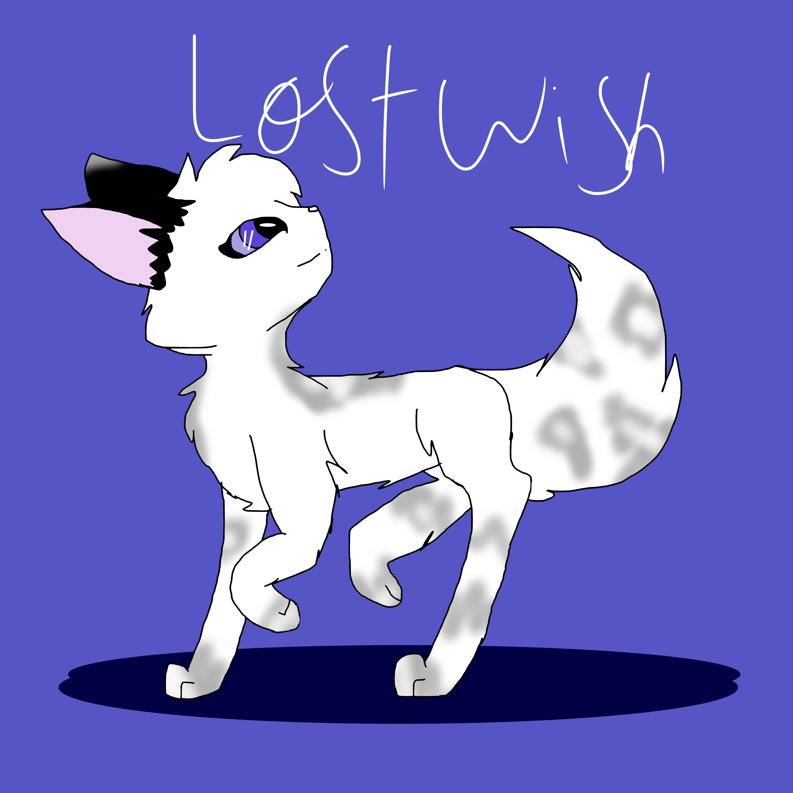

The introverted cat clears her throat as she begins her speech

Lostwish
“You said that you would be here till death. You left me when you found out my backstory. You said you would always care for me. You began to abuse me. Why should I give you a second chance if you are just gonna rip my heart again and again?”
Basic Information
Name:
Lostwish
Nickname:
Lost, Wish
Age:
13 moons
Gender:
Female
Clan:
Thunderclan
Rank:
Warrior
Breed:
White Bengal cat
Family Information
Mother:
Open
Father:
Unknown
Siblings:
She was an only kit
Mate:
Gain this woman's trust!
Crush:
DID YOU NOT HEAR MEH?^^^^^
Kits:
N/A
Bloodline:
Clan-born all the way!
Scent:
Like a sort of.. Mystery?..
Appearance and Personality Information
Appearance:
Lostwish is a white she-cat with black ears and a short husky-like tail. She has blue wolf-like eyes. Going back to fur, her fur is short, but around the base of her tail is longer fur. Not incredibly long though. Has smoky black markings on her body like a true bengal as well
Personality:
Lost is a shy and while sweet, she is also harshly truthful. She tells the truth, the whole truth, and nothing BUT the truth. Unless she can get her heart softened, she almost always tells the blunt and harsh truth. The reason Lost is shy is because she hates being center of attention, it makes her feel awkward since she is more introverted than others. Sadly, she is blind, but has grown used to not seeing other people.
Strengths:
She can stay hidden in the shadows for long periods of time
Weaknesses:
Being the introverted dumpling she is, she cannot talk to more than one person. And if they crowd around her, she goes into a sort of rage. Either that or she runs off to hide herself until her anxiety has cooled off
Voice
Her voice is similar to Edyn from Magi-nation(Yes I actually watched that. Was THE best)
History and Relationships
History:
Lost was born on a full moon gathering. The queen she was born to had stayed behind and gave birth. When doing so tho, she was left. The queen had forgotten her and when the queen came back to the spot after the gathering, she was shocked to find no kit. But, her being the not caring and young mother she was, she figured it was best. What clan cat wanted such a beautiful cat with either a momma’s belly or a stupid kit anyway? But.. What this cat thought happened was that Lost was taken and eaten. No, she was taken by a Thunderclan patrol back to their camp. There she was raised by a new queen. But a few moons later, she fell in love with a tom cat named Shadowstrike. Turns out, he hated her. After he found out about her, he began to abuse her. He would take her to a secluded area and would hurt her, scratching her. Then he would spat insult after insult. Finally, he died due to a diseased prey that she gave him. That was the best thing that happened, and everyone thought he died to a badger. Nobody ever investigated further either!
Relationships:
~Respect~
Her clan
~Trust~
She cannot. She is afraid of being emotionally hurt, unless you wanna try.
~Crush~
Open
~Love~
Open
~Friend~
Open
~Best friend~
Open
~Neutral~
The other three clans, stupid furballs..
~Unsure~
Open
~Dislike~
Not much
~Hate~
Open